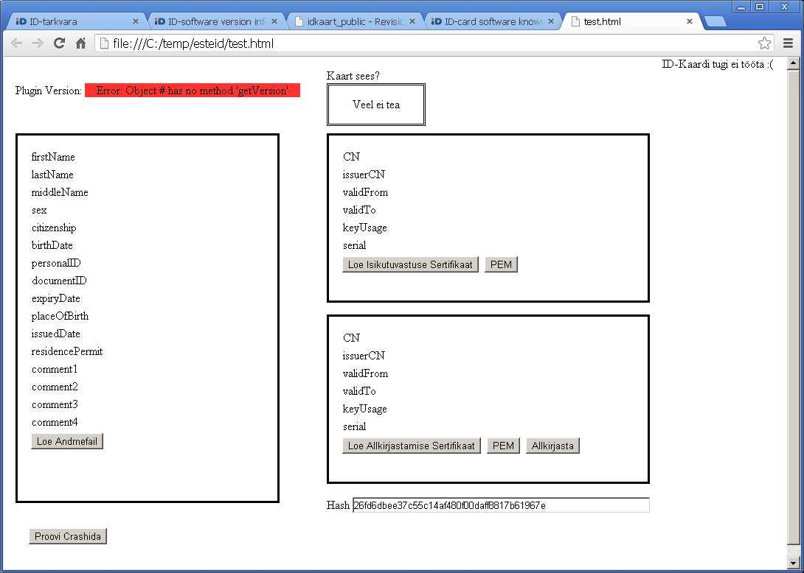
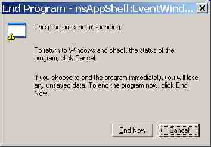

20121214¶
Defining custom AJAX actions¶
Yesterday and today I implemented another important internal todo: I replaced the “confirmation” machinery be a new one which doesn’t require a step variable and doesn’t repeat code. We can be glad that Lino isn’t yet a popular framework, because this was an important API change which caused some work to convert all existing run actions. Before:
def run(self,row,ar,**kw):
... code ...
ar.confirm("Are you sure?")
... run after ok...
After:
def run(self,row,ar,**kw):
... code ...
def ok():
... run after ok...
return ar.confirm(ok,"Are you sure?")
The overall system is still merely documented because not yet very stable. The main things to document are:
promptconfirmsuccesserror
How to read Estonian eid cards¶
Now that Lino can read Belgian identity cards it should be interesting to do the same with Estonian cards as well, and then compare the two environments.
Remember that we have a very decent requirement: we don’t want to authenticate, we just want to read the “personal data” information on the card into our database.
The Estonian equivalent of Belgium’s Middleware is a browser plugin released under LGPL license at http://code.google.com/p/esteid/
The examples at
http://code.google.com/p/esteid/source/browse/#svn/esteid-browser-plugin/trunk/testpage
told me how it seems to work.
Looked very promising.
Added lino.Lino.use_esteid and modified
linolib.js and ext_ui.py...
... but then I discovered that even their example just doesn’t work:
Google Chrome doesn’t seem to be supported, and Firefox doesn’t react at all, causing the well-known image when I later try to shutdown my computer:
And then oops: the page at http://id.ee/index.php?id=34283 says that the source code is under https://svn.eesti.ee/projektid/idkaart_public/
What is the difference between the repositories at svn.eesti.ee and code.google.com? Or rather why is there a project code.google.com/p/esteid?
Lots of unanswered questions...

{kind=link}